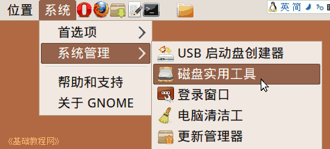
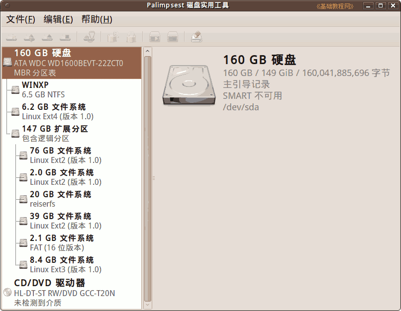
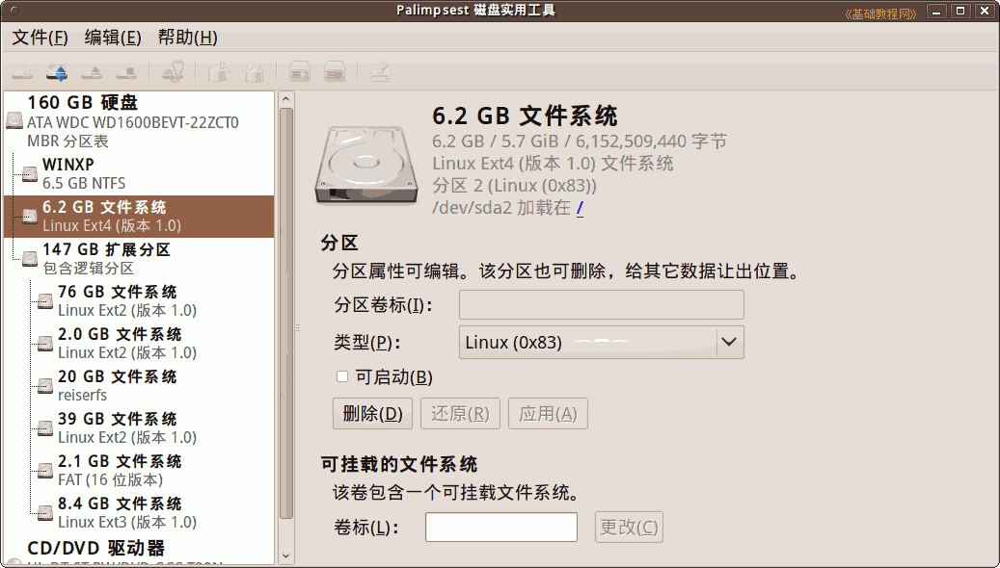
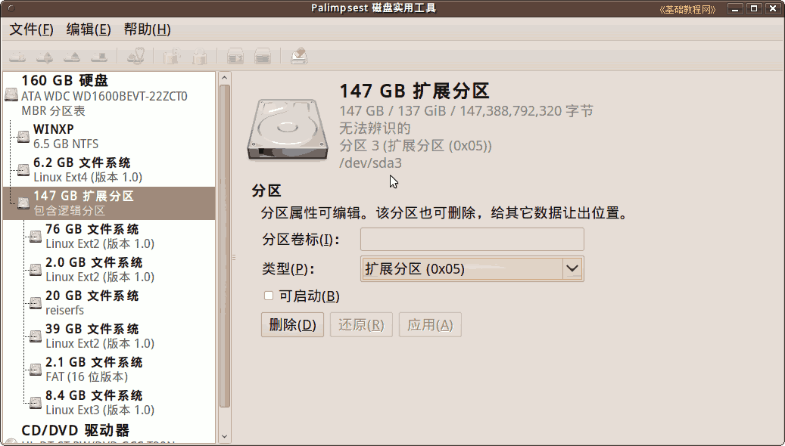
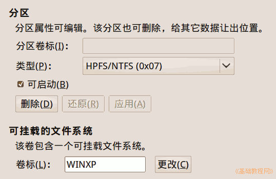

Ubuntu/GNOME 桌面程序指南
作者：TeliuTe 来源：基础教程网
三十二、磁盘实用工具 返回目录 下一课在这里，您可以查看硬盘温度、分区情况，输入卷标等；
1、磁盘实用工具
1）点菜单“系统 - 系统管理 - 磁盘实用工具”，打开 磁盘实用工具窗口；

2）在面板左侧是硬盘和分区情况，右侧是硬盘信息；

3）在左侧选中一个分区，右边会显示相关信息和各项操作；

4）分区编号 1 - 4 是主分区，用 sda1 - sda4 表示，从 5 开始是逻辑分区，一个硬盘最多能划分四个主分区(包括扩展分区)，逻辑分区在扩展分区中，数量没有限制；

5）卷标是分区的名称，便于记忆，类型是分区格式，一般有 FAT、NTFS、EXT 等；

本节学习了磁盘实用工具的基础知识，如果你成功地完成了练习，请继续学习下一课内容；
本教程由86团学校TeliuTe制作|著作权所有
基础教程网：http://teliute.org/
美丽的校园……
转载和引用本站内容，请保留版权信息和本站链接。